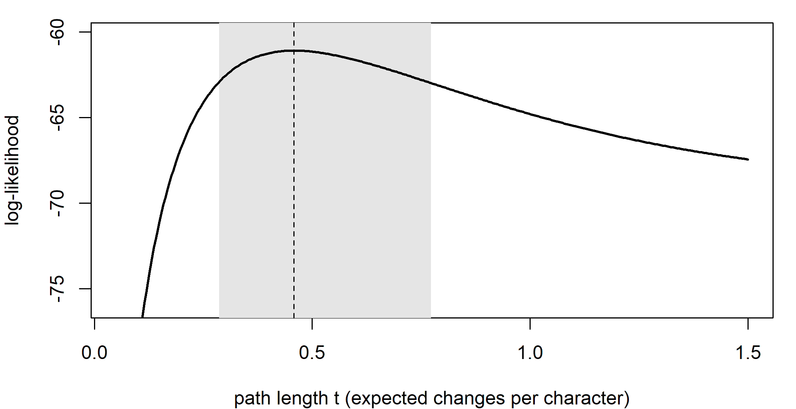
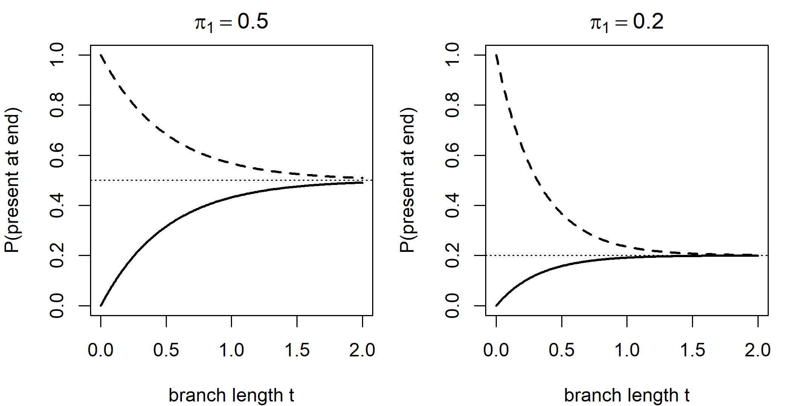
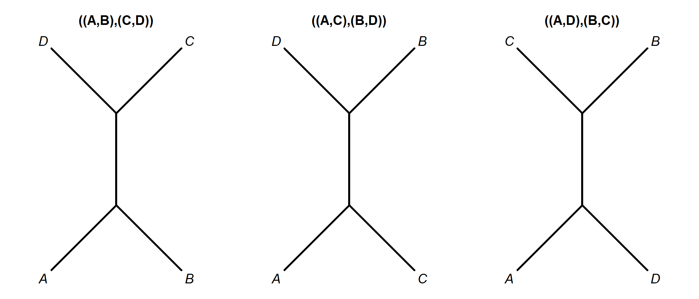
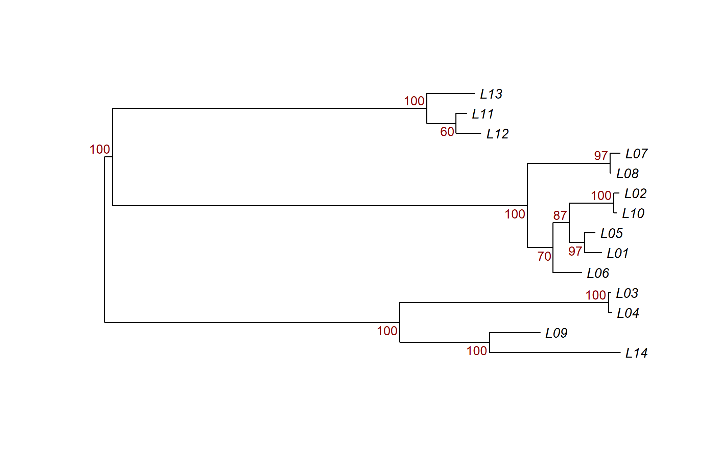

Chapter 5 Maximum Likelihood
Maximum likelihood (ML) is the bridge between the algorithmic methods of Chapter 4 and the Bayesian methods that dominate linguistic phylogenetics today (Chapter 6). It requires an explicit probabilistic model of how characters change along the branches of a tree, and it chooses the tree and parameter values under which the observed data are most probable. Every model-based method in this book, Bayesian ones included, rests on the same machinery: a continuous-time Markov chain that describes change along a branch, the transition probabilities \(\mathbf{P}(t) = e^{\mathbf{Q}t}\) that it implies, and Felsenstein’s pruning algorithm, which computes the probability of a whole data matrix on a tree efficiently. This chapter explains that machinery with small linguistic examples, shows how ML trees are searched for, supported and compared, and explains why cognate data need a correction that most DNA data do not. Readers who want to refresh the background can consult Sections A.3 (likelihood), A.4 (the gamma distribution), A.6 (the matrix exponential) and A.7 (continuous-time Markov chains) of the mathematical appendix.
After reading this chapter you should be able to:
- explain the difference between a probability and a likelihood, and find the maximum likelihood estimate of the path length between two languages;
- specify the binary model for cognate data by its rate matrix, and read its transition probabilities as a function of branch length;
- compute the likelihood of a cognate character on a small tree by hand with Felsenstein’s pruning algorithm, and explain why the algorithm is efficient;
- explain why cognate data are ascertained, what goes wrong if the likelihood is not corrected, and apply a correction in phangorn;
- run and interpret a heuristic ML tree search, bootstrap support values and a topology test;
- compare models with likelihood-ratio tests and information criteria, and distinguish the choice of the best candidate model from a check of absolute adequacy.
5.1 The likelihood principle
5.1.1 Probability and likelihood
A probability model assigns probabilities to possible data given fixed values of its parameters. If a coin has probability \(\theta\) of landing heads, the probability of seeing 7 heads in 10 tosses is \(\binom{10}{7}\theta^7(1-\theta)^3\). The likelihood function reads the same expression the other way around: the data are now fixed, and it is a function of the parameter, \[\begin{equation} L(\theta) = P(D \mid \theta), \tag{5.1} \end{equation}\] which measures how well each value of \(\theta\) predicts the data actually observed. The likelihood is not a probability distribution over \(\theta\); it does not integrate to one, and only ratios of likelihoods are meaningful. The maximum likelihood estimate (MLE) \(\hat\theta\) is the value that maximizes \(L(\theta)\), or equivalently the log-likelihood \(\ell(\theta) = \ln L(\theta)\). For the coin, \(\hat\theta = 7/10\).
The idea goes back to Fisher (1922), and its use as a general principle of inference was argued at length by Edwards (1972). Two features make it attractive. First, under regularity conditions, MLEs are consistent (they converge on the true value as the data grow), asymptotically normal, and asymptotically efficient (no consistent estimator has smaller variance in large samples). Second, the log-likelihood provides a natural scale for comparing hypotheses: a difference of about two log-likelihood units corresponds roughly to the boundary of a 95 percent confidence interval for a single parameter, since twice the log-likelihood difference is approximately \(\chi^2\)-distributed with one degree of freedom, and the 95 percent point of that distribution is 3.84.
The application to trees was pioneered by Joseph Felsenstein, first for discrete characters (Felsenstein 1973) and then, decisively, for DNA sequences (Felsenstein 1981). In phylogenetics, the “parameters” include the tree topology \(\tau\), the branch lengths \(\mathbf{t}\) and the parameters \(\theta\) of the model of change, and the likelihood is \(L(\tau, \mathbf{t}, \theta) = P(D \mid \tau, \mathbf{t}, \theta)\). The topology is an unusual parameter, discrete and with a huge number of possible values, which causes both the computational and the statistical difficulties discussed in this chapter.
5.1.2 A first example: two languages
Consider two languages and \(N\) binary cognate characters, and suppose that each character switches between presence (1) and absence (0) at the same rate in both directions. We will derive this model properly in the next section; for now we need one result: if the path between the two languages has length \(t\) in expected changes per character, the probability that they are in different states for a character is \(p(t) = \tfrac{1}{2}(1 - e^{-2t})\). If \(k\) of the \(N\) characters differ, the likelihood is \[\begin{equation} L(t) \propto p(t)^k \left[1 - p(t)\right]^{N-k}. \tag{5.2} \end{equation}\] This is a binomial likelihood in \(p\), maximized at \(\hat p = k/N\). Because \(p(t)\) is a one-to-one function of \(t\) (for \(p < 1/2\)), the MLE of \(t\) is obtained by inverting it: \(\hat t = -\tfrac{1}{2}\ln(1 - 2k/N)\), which is precisely the corrected binary distance of equation (4.4). Corrected distances are thus maximum likelihood estimates of pairwise path lengths. What full ML adds is that it estimates all the branch lengths of the tree jointly from all the characters, using the information in which languages share which states, not just pairwise counts.
N <- 100; k <- 30
ll_t <- function(t) {
p <- 0.5 * (1 - exp(-2 * t))
k * log(p) + (N - k) * log(1 - p)
}
t_hat <- -0.5 * log(1 - 2 * k / N)
t_grid <- seq(0.05, 1.5, length.out = 400)
ll <- ll_t(t_grid)
ci <- range(t_grid[ll > ll_t(t_hat) - 1.92])
par(mar = c(4, 4, 1, 1))
plot(t_grid, ll, type = "n",
xlab = "path length t (expected changes per character)",
ylab = "log-likelihood", ylim = c(ll_t(t_hat) - 15, ll_t(t_hat) + 1))
rect(ci[1], -1e6, ci[2], 1e6, col = "grey90", border = NA)
lines(t_grid, ll, lwd = 2)
abline(v = t_hat, lty = 2)
Figure 5.1: Log-likelihood of the path length \(t\) between two languages that differ in 30 of 100 binary characters, under the symmetric binary model. The dashed line marks the MLE; the shaded band contains the values within 1.92 log-likelihood units of the maximum (an approximate 95 percent confidence interval).
#> t_hat lower upper
#> 0.4581 0.2862 0.7732The interval is asymmetric: the likelihood falls off steeply toward short paths (which would make 30 differences implausible) but slowly toward long ones, because the probability of a difference saturates at one half. Long paths are always estimated less precisely than short ones, a fact that matters for the deep nodes of language trees.
5.2 Continuous-time Markov chains
5.2.1 Definitions
Models of character change along a branch are continuous-time Markov chains (CTMCs). A CTMC is a random process \(X(t)\) that is in one of a finite number of states \(\{1, \dots, k\}\) at each time \(t \geq 0\) (for a cognate character, absent or present; for a meaning slot, one of several cognate classes; for word order, SOV, SVO and so on), and that satisfies the Markov property: the probability of future states depends only on the current state, not on how the process got there. A language that has lost its inherited word for ‘dog’ does not “remember” how long it had it.
A CTMC is specified by its instantaneous rate matrix \(\mathbf{Q} = (q_{ij})\). For \(i \neq j\), \(q_{ij} \geq 0\) is the rate of change from state \(i\) to state \(j\): in a short interval of length \(h\), a process in state \(i\) moves to \(j\) with probability approximately \(q_{ij}h\). The diagonal entries are set so that each row sums to zero, \(q_{ii} = -\sum_{j \neq i} q_{ij}\), so that \(-q_{ii}\) is the total rate of leaving state \(i\). The time spent in state \(i\) before leaving is exponentially distributed with rate \(-q_{ii}\), and when the process leaves, it jumps to \(j\) with probability \(q_{ij} / (-q_{ii})\).
5.2.2 From rates to probabilities: \(\mathbf{P}(t) = e^{\mathbf{Q}t}\)
What we need for likelihood calculations is not the rates but the transition probabilities \(P_{ij}(t) = P(X(t) = j \mid X(0) = i)\) over a finite time \(t\), collected in the matrix \(\mathbf{P}(t)\). The key fact is that the rates determine these probabilities completely. Because the process has no memory, the probability of going from \(i\) to \(j\) in time \(t + h\) is the probability of going from \(i\) to some intermediate state in time \(t\) and then on to \(j\) in time \(h\). Letting \(h\) shrink turns this observation into a matrix differential equation whose solution is \[\begin{equation} \mathbf{P}(t) = e^{\mathbf{Q}t} = \sum_{n=0}^{\infty} \frac{(\mathbf{Q}t)^n}{n!}, \tag{5.3} \end{equation}\] the matrix exponential. In practice it is computed from an eigendecomposition of \(\mathbf{Q}\). Because the rows of \(\mathbf{Q}\) sum to zero, one eigenvalue is always 0; the others are negative and determine how fast the chain forgets its starting state.
5.2.3 Stationarity, reversibility and units
If every state can be reached from every other, the chain has a unique stationary distribution \(\pi\), the row vector satisfying \(\pi\mathbf{Q} = \mathbf{0}\). As \(t \to \infty\), every row of \(\mathbf{P}(t)\) converges to \(\pi\): after a long time the state of the process is independent of where it started. Phylogenetic models usually assume that the process at the root of the tree is already at stationarity, so the root state is drawn from \(\pi\).
Most phylogenetic models are also time-reversible: they satisfy the detailed balance condition \(\pi_i q_{ij} = \pi_j q_{ji}\) for all \(i, j\), meaning that at stationarity the flow from \(i\) to \(j\) equals the flow from \(j\) to \(i\). A reversible process looks the same run forward or backward in time, which, as we shall see, makes the likelihood independent of where the root is placed.
Finally, rate and time are confounded. Multiplying \(\mathbf{Q}\) by a constant and dividing \(t\) by the same constant leaves \(\mathbf{Q}t\), and so \(\mathbf{P}(t)\), unchanged. Without external information (a clock and calibrations, Section 9.1.1 and Chapter 10) only the product is identifiable. By convention \(\mathbf{Q}\) is therefore normalized so that the expected rate of change at stationarity is one, \(-\sum_i \pi_i q_{ii} = 1\), and branch lengths are measured in expected number of changes per character. This is the first example in the book of a quantity, the absolute rate of lexical change, that is not identifiable from the character data alone under the model (Section 6.10).
5.2.4 The binary model for cognate data
The workhorse model for cognate data is the two-state CTMC. Let state 0 be “cognate set absent” and state 1 “present”, let \(\alpha\) be the rate of gain (\(0 \to 1\)) and \(\beta\) the rate of loss (\(1 \to 0\)): \[\begin{equation} \mathbf{Q} = \begin{pmatrix} -\alpha & \alpha \\ \beta & -\beta \end{pmatrix}. \tag{5.4} \end{equation}\] Solving \(\pi\mathbf{Q} = \mathbf{0}\) with \(\pi_0 + \pi_1 = 1\) gives \(\pi_1 = \alpha / (\alpha + \beta)\) and \(\pi_0 = \beta / (\alpha + \beta)\). The eigenvalues are 0 and \(-(\alpha + \beta)\), and working through the eigendecomposition (Section B.3.1) gives the closed form \[\begin{equation} \mathbf{P}(t) = \begin{pmatrix} \pi_0 + \pi_1 e^{-(\alpha+\beta)t} & \pi_1\left(1 - e^{-(\alpha+\beta)t}\right) \\ \pi_0\left(1 - e^{-(\alpha+\beta)t}\right) & \pi_1 + \pi_0 e^{-(\alpha+\beta)t} \end{pmatrix}. \tag{5.5} \end{equation}\] Each row starts at the identity when \(t = 0\) and decays exponentially toward \(\pi\). The normalization \(\pi_0\alpha + \pi_1\beta = 1\) gives \(2\alpha\beta/(\alpha+\beta) = 1\), so that \(\alpha + \beta = 1/(2\pi_0\pi_1)\). The normalized model therefore has a single free parameter, \(\pi_1\), the equilibrium frequency of presence; with \(\pi_1 = 1/2\) it reduces to the symmetric model used in the two-language example. The model is reversible: \(\pi_0\alpha = \pi_1\beta = \alpha\beta/(\alpha+\beta)\).
This model was introduced for restriction-site data in molecular biology (Felsenstein 1992), which, like cognate data, record the presence or absence of a feature. It is often called the restriction-site or binary model in software (MrBayes’s lset coding options, BEAST 2’s binary substitution models, IQ-TREE’s GTR2), and with \(\pi_1 = 1/2\) it is the two-state member of the Mk family of models for discrete morphological characters (Lewis 2001), which generalizes the Jukes–Cantor model (Jukes and Cantor 1969) to \(k\) states with equal rates between all pairs. Table 5.1 lists the binary and multistate models alongside their better-known DNA counterparts (Kimura 1980; Hasegawa et al. 1985; Tavaré 1986).
| Model | States | Free parameters in \(\mathbf{Q}\) | Linguistic use |
|---|---|---|---|
| Binary symmetric (JC2, Mk with \(k=2\)) | 2 | 0 | cognate presence/absence with equal gain and loss |
| Binary with unequal frequencies (GTR2, restriction site) | 2 | 1 (\(\pi_1\)) | cognate presence/absence, the standard choice |
| Mk (Lewis 2001) | \(k\) | 0 | multistate meaning slots or structural features |
| Asymmetric Mk / GTR on \(k\) states | \(k\) | up to \(k(k-1) - 1\) | ordered or directional structural changes |
| Jukes–Cantor (JC69) (Jukes and Cantor 1969) | 4 (DNA) | 0 | (biology) |
| HKY85 (Hasegawa et al. 1985) | 4 (DNA) | 4 (\(\kappa\) and 3 frequencies) | (biology) |
| GTR (Tavaré 1986) | 4 (DNA) | 8 (5 exchangeabilities, 3 frequencies) | (biology) |
The code below builds the normalized binary \(\mathbf{Q}\), checks the closed form (5.5) against a numerical matrix exponential from the expm package (a small piece of implementation validation, in the vocabulary of Section 6.10), and plots the transition probabilities.
binary_Q <- function(pi1) {
pi0 <- 1 - pi1
s <- 1 / (2 * pi0 * pi1) # alpha + beta after normalization
matrix(c(-s * pi1, s * pi1,
s * pi0, -s * pi0), 2, byrow = TRUE,
dimnames = list(c("0", "1"), c("0", "1")))
}
binary_P <- function(t, pi1) { # closed form, equation (binaryP)
pi0 <- 1 - pi1
e <- exp(-t / (2 * pi0 * pi1))
matrix(c(pi0 + pi1 * e, pi1 * (1 - e),
pi0 * (1 - e), pi1 + pi0 * e), 2, byrow = TRUE)
}
Q <- binary_Q(0.3)
Q#> 0 1
#> 0 -0.7143 0.7143
#> 1 1.6667 -1.6667#> [1] 1#> [1] TRUEtt <- seq(0, 2, length.out = 200)
par(mfrow = c(1, 2), mar = c(4, 4, 2, 1))
for (p1 in c(0.5, 0.2)) {
P01 <- sapply(tt, function(t) binary_P(t, p1)[1, 2])
P11 <- sapply(tt, function(t) binary_P(t, p1)[2, 2])
plot(tt, P11, type = "l", lty = 2, lwd = 2, ylim = c(0, 1),
xlab = "branch length t", ylab = "P(present at end)",
main = bquote(pi[1] == .(p1)))
lines(tt, P01, lwd = 2)
abline(h = p1, lty = 3)
}
Figure 5.2: Transition probabilities of the normalized binary model as a function of branch length. Left: symmetric model (\(\pi_1 = 0.5\)). Right: unequal frequencies (\(\pi_1 = 0.2\)), typical of cognate data in which any given cognate set is absent from most languages. Solid lines start in state 0 (absent), dashed lines in state 1 (present); each converges to the stationary frequency of presence (dotted).
5.2.5 Variation in rates among characters
Not all characters change at the same rate. In basic vocabulary, words for ‘two’, ‘name’ or ‘I’ are replaced far more slowly than words for ‘dirty’ or ‘to throw’ (Pagel et al. 2007). A model that forces all characters to share one rate will overestimate change for the slow characters and underestimate it for the fast ones, and it will typically underestimate long branches. The standard remedy, from DNA work, is to multiply each character’s branch lengths by a rate \(r\) drawn from a gamma distribution with mean 1 and shape parameter \(\alpha_\Gamma\) (small values mean strong heterogeneity), approximated by a few discrete categories (Yang 1994). The likelihood of a character is then the average of its likelihoods over the categories: \[\begin{equation} L_i = \frac{1}{K}\sum_{c=1}^{K} P(D_i \mid \tau, r_c\mathbf{t}, \theta), \tag{5.6} \end{equation}\] where \(r_1, \dots, r_K\) are the mean rates of \(K\) equal-probability categories of the gamma distribution and \(r_c\mathbf{t}\) denotes all branch lengths multiplied by \(r_c\) (Section A.4 describes the gamma distribution and its discretization). The cost is a \(K\)-fold increase in computation; \(K = 4\) is the usual compromise. The category rates show how strongly a small shape parameter spreads the rates out:
library(phangorn)
rates_table <- t(sapply(c(0.2, 0.5, 1, 5),
function(a) discrete.gamma(a, k = 4)))
dimnames(rates_table) <- list(paste("shape", c(0.2, 0.5, 1, 5)),
paste("category", 1:4))
round(rates_table, 3)#> category 1 category 2 category 3 category 4
#> shape 0.2 0.001 0.034 0.384 3.582
#> shape 0.5 0.033 0.252 0.820 2.894
#> shape 1 0.137 0.477 1.000 2.386
#> shape 5 0.502 0.804 1.083 1.611With shape 0.2, three quarters of the characters are nearly invariable and the fastest quarter carries almost all the change; with shape 5, rates are nearly equal. Cognate data typically yield small shape estimates, reflecting the very different stabilities of basic meanings. A proportion of invariable characters (+I) is another common option. These extensions, and more linguistically motivated alternatives such as rates that depend on meaning or word frequency and covarion models in which rates change over time, are the subject of Chapter 7 (Section 7.5). The gamma shape is a parameter that is identifiable and usually well estimated, but its historical interpretation is indirect: it summarizes how unequal the stabilities of the sampled meanings are, not any particular historical event.
5.3 The likelihood of a tree
5.3.1 Assumptions
To go from a model of change along one branch to the probability of a data matrix on a whole tree, three standard assumptions are made:
- Independence across characters: each character evolves independently of the others, given the tree and the model. The likelihood of the data matrix is the product of the likelihoods of its characters.
- Markov evolution along the tree: along each branch, each character evolves according to the CTMC, starting from the state at the branch’s upper end. At a split, both daughter lineages inherit the parent’s state and then evolve independently.
- Homogeneity and stationarity: the same \(\mathbf{Q}\) applies on every branch (up to rate multipliers), and the root state is drawn from \(\pi\).
All three are idealizations. Binary coding of meaning slots violates independence (Chapter 7); borrowing violates the assumption that lineages evolve independently after they split (Chapter 8); and rates of lexical change vary over time and among lineages (Chapter 9). But the assumptions make the computation tractable, and many of their violations can be relaxed within the same framework.
5.3.2 Summing over unobserved ancestral states
Under these assumptions, if we knew the states at every internal node, the probability of one character would be a product of transition probabilities, one per branch, times the root probability. We do not know the ancestral states, so we sum over all possible assignments. For a rooted tree with leaves 1 to 4, internal nodes \(x\) (root) and \(y\), and the topology \(((1, 2)_y, 3, 4)_x\), with observed states \(s_1, \dots, s_4\) and branch lengths \(t_1, \dots, t_4\) and \(t_y\), \[\begin{equation} L = \sum_{x}\sum_{y} \pi_x \, P_{x y}(t_y)\, P_{y s_1}(t_1)\, P_{y s_2}(t_2)\, P_{x s_3}(t_3)\, P_{x s_4}(t_4). \tag{5.7} \end{equation}\] With \(n\) leaves and \(k\) states there are \(k^{n-1}\) terms in this double, triple, \(\ldots\) sum, one for each assignment of states to the \(n - 1\) internal nodes of a rooted binary tree. For 50 languages and binary characters this is \(2^{49} \approx 5.6 \times 10^{14}\) terms per character, so direct summation is out of the question. Summing over all assignments is also what distinguishes likelihood from parsimony, which scores a tree by its single best reconstruction (Chapter 4). If one tree can explain a character by many different histories and another by only one, the first gains likelihood from all of them, just as a total of seven with two dice is six times as probable as a total of two, although each particular throw is equally likely (Holder and Lewis 2003).
5.3.3 The pulley principle
Because the model is reversible and stationary, the likelihood does not depend on where the root is placed. This is Felsenstein’s pulley principle (Felsenstein 1981): one can slide the root along any branch, like a rope over a pulley, without changing the likelihood, as long as the sum of the two branch segments is constant. As a consequence, ML under reversible models estimates unrooted trees, and the root has to be placed afterward by an outgroup or by a clock model.
5.4 Felsenstein’s pruning algorithm
5.4.1 The recursion
The solution to the explosion of terms is the pruning algorithm (Felsenstein 1981), a dynamic programming method that rearranges the sum (5.7) by pushing each summation as far inside the product as possible. Define for each node \(v\) and each state \(a\) the conditional likelihood \[L_v(a) = P(\text{observed states at the leaves below } v \mid v \text{ is in state } a).\] At a leaf, \(L_v(a) = 1\) if \(a\) is the observed state and 0 otherwise. If the state is missing or ambiguous, \(L_v(a) = 1\) for every state compatible with the observation, which is how missing data are handled. For an internal node \(v\) with children \(u\) and \(w\) reached along branches of length \(t_u\) and \(t_w\), \[\begin{equation} L_v(a) = \left[\sum_b P_{ab}(t_u)\, L_u(b)\right] \times \left[\sum_c P_{ac}(t_w)\, L_w(c)\right]. \tag{5.8} \end{equation}\] The first factor is the probability of the data below \(u\) given that \(v\) is in state \(a\): the process moves from \(a\) to some state \(b\) along the branch, and then generates the data below \(u\) with probability \(L_u(b)\). Independence of the two daughter lineages makes the two factors multiply. At the root, \[\begin{equation} L = \sum_a \pi_a L_{\text{root}}(a). \tag{5.9} \end{equation}\] Visiting nodes in postorder (children before parents), each node requires \(O(k^2)\) operations, so the likelihood of one character costs \(O(nk^2)\) instead of \(O(k^{n-1})\), and the likelihood of \(m\) characters costs \(O(nk^2m)\). For multifurcating nodes, the bracketed factor is simply repeated for every child. The recursion is the same as that of Sankoff parsimony (equation (B.7)), with sums of products in place of minima of sums.
Two practical refinements matter. Characters with identical patterns of states across the languages have identical likelihoods, so programs compute each distinct site pattern once and weight it by its count. And conditional likelihoods become tiny for large trees and can underflow the floating-point range, so programs rescale them at intervals and keep track of the logarithms of the scaling factors.
5.4.2 A worked example by hand
Consider four languages, English, German, Italian and Spanish, a cognate set present in English and German and absent in Italian and Spanish (the pattern 1100), and the unrooted tree with branch lengths English 0.1, German 0.2, Italian 0.1, Spanish 0.3, and internal branch 0.2. We use the symmetric binary model (\(\pi_0 = \pi_1 = 1/2\)), for which \(P_{\text{same}}(t) = \tfrac{1}{2}(1 + e^{-2t})\) and \(P_{\text{diff}}(t) = \tfrac{1}{2}(1 - e^{-2t})\). By the pulley principle we can root the tree at the node \(u\) that joins English and German; call the other internal node \(v\).
Step 1 (node \(v\)). Both Italian and Spanish are in state 0. So \(L_v(0) = P_{\text{same}}(0.1) \times P_{\text{same}}(0.3)\) and \(L_v(1) = P_{\text{diff}}(0.1) \times P_{\text{diff}}(0.3)\).
Step 2 (node \(u\)). Node \(u\) has three neighbors: English and German (both in state 1) and \(v\), reached along the internal branch of length 0.2. For \(a \in \{0, 1\}\), \[L_u(a) = P_{a1}(0.1)\, P_{a1}(0.2) \left[P_{a0}(0.2) L_v(0) + P_{a1}(0.2) L_v(1)\right].\]
Step 3 (root). \(L = \tfrac{1}{2}L_u(0) + \tfrac{1}{2}L_u(1)\).
The following code carries out exactly these steps and shows the intermediate quantities, then checks the result against phangorn’s pml(), an independent implementation.
Ps <- function(t) 0.5 * (1 + exp(-2 * t)) # same state
Pd <- function(t) 0.5 * (1 - exp(-2 * t)) # different state
Lv <- c("0" = Ps(0.1) * Ps(0.3), "1" = Pd(0.1) * Pd(0.3))
Lu <- c("0" = Pd(0.1) * Pd(0.2) * (Ps(0.2) * Lv["0"] + Pd(0.2) * Lv["1"]),
"1" = Ps(0.1) * Ps(0.2) * (Pd(0.2) * Lv["0"] + Ps(0.2) * Lv["1"]))
L_hand <- sum(0.5 * Lu)
knitr::kable(data.frame(node = c("v", "v", "u", "u"), state = c(0, 1, 0, 1),
conditional_likelihood = signif(c(Lv, Lu), 4)),
row.names = FALSE,
caption = "Conditional likelihoods in the worked pruning example.")| node | state | conditional_likelihood |
|---|---|---|
| v | 0 | 0.7042 |
| v | 1 | 0.0204 |
| u | 0 | 0.0088 |
| u | 1 | 0.1011 |
tr4 <- read.tree(
text = "((English:0.1,German:0.2):0.2,Italian:0.1,Spanish:0.3);")
x4 <- phyDat(matrix(c("1", "1", "0", "0"), ncol = 1,
dimnames = list(c("English", "German", "Italian",
"Spanish"), NULL)),
type = "USER", levels = c("0", "1"))
c(by_hand = L_hand, phangorn = exp(pml(tr4, x4)$logLik))#> by_hand phangorn
#> 0.05498 0.05498The likelihood of this character is 0.055, and phangorn agrees. Notice where it comes from: \(L_u(1)\) is more than ten times larger than \(L_u(0)\), because English and German are both in state 1 and are joined to \(u\) by short branches. The algorithm has, in effect, reconstructed that the ancestor of English and German most probably had the cognate, while still averaging over the alternative. The same quantities, normalized, give the marginal posterior probabilities of ancestral states used in ancestral state reconstruction (Chapter 12).
A likelihood is a probability, and a probability can be approximated by a long-run frequency. If the character were to evolve on this tree, with these branch lengths and this model, again and again, the proportion of replicates ending in the pattern 1100 should approach the value just computed. phangorn’s simSeq() simulates characters on a tree under the same model, so a few hundred thousand simulated characters give an approximation whose Monte Carlo standard error can be stated.
set.seed(11)
n_sim <- 2e5
sim4 <- simSeq(tr4, l = n_sim, type = "USER", levels = c("0", "1"))
sim_mat <- as.character(sim4)[c("English", "German", "Italian",
"Spanish"), ]
p_hat <- mean(colSums(sim_mat == c("1", "1", "0", "0")) == 4)
c(by_hand = L_hand, simulated = p_hat,
mc_se = sqrt(p_hat * (1 - p_hat) / n_sim))#> by_hand simulated mc_se
#> 0.0549836 0.0556450 0.0005126The simulated frequency agrees with the pruning result to within its Monte Carlo error (here the two differ by a little more than one standard error). Such a check costs nothing, uses code that shares nothing with the likelihood calculation except the model, and is an instance of what Section 6.10 calls implementation validation. It is hopeless as a way of computing likelihoods for real data, since the probability of any particular matrix of hundreds of characters is astronomically small, but it makes vivid what the pruning algorithm computes: how often the model would produce exactly the data we observed.
A general implementation of the pruning algorithm in R, which handles any tree, all characters at once and missing data, together with its verification against phangorn and a numerical check of the pulley principle, is in Section B.3.2.
5.5 Estimating branch lengths and model parameters
For a fixed topology, the ML branch lengths and model parameters are found by numerical optimization. Programs usually optimize one branch at a time, holding the others fixed, and cycle through the branches until the likelihood stops improving. For a single branch, the log-likelihood is a smooth function of its length, and its first and second derivatives can be computed cheaply, so Newton–Raphson iteration converges in a few steps. Model parameters such as \(\pi_1\) or the gamma shape are optimized with one-dimensional methods such as Brent’s method.
To see this at work we need data for which the truth is known. The function below simulates binary characters on a tree: it draws the root state from \(\pi\) and then evolves each character down the tree using the transition probabilities (5.5), optionally with a different rate multiplier for each character. We simulate 600 characters for eight invented languages with \(\pi_1 = 0.3\).
sim_binary <- function(tree, nchar, pi1, rates = rep(1, nchar)) {
tree <- reorder(tree, "cladewise") # parents before children
ntip <- Ntip(tree); pi0 <- 1 - pi1
S <- matrix(NA_integer_, ntip + tree$Nnode, nchar)
S[ntip + 1, ] <- rbinom(nchar, 1, pi1)
for (e in seq_len(nrow(tree$edge))) {
p <- tree$edge[e, 1]; ch <- tree$edge[e, 2]
ex <- exp(-tree$edge.length[e] * rates / (2 * pi0 * pi1))
prob1 <- ifelse(S[p, ] == 1, pi1 + pi0 * ex, pi1 * (1 - ex))
S[ch, ] <- rbinom(nchar, 1, prob1)
}
out <- S[seq_len(ntip), , drop = FALSE]
rownames(out) <- tree$tip.label
out
}
set.seed(5)
langs8 <- c("Ana", "Bel", "Cor", "Dun", "Esk", "Fal", "Gor", "Hal")
tr8 <- rtree(8, rooted = FALSE, tip.label = langs8)
tr8$edge.length <- tr8$edge.length * 0.25
X8 <- sim_binary(tr8, 600, pi1 = 0.3)
pd8 <- phyDat(X8, type = "USER", levels = c(0, 1))Starting from the true topology with every branch set to 0.1, optim.pml() optimizes all 13 branch lengths.
start8 <- tr8; start8$edge.length <- rep(0.1, Nedge(start8))
fit8 <- optim.pml(pml(start8, pd8, bf = c(0.7, 0.3)), optEdge = TRUE,
control = pml.control(trace = 0))
c(logLik_start = pml(start8, pd8, bf = c(0.7, 0.3))$logLik,
logLik_fitted = fit8$logLik,
tree_length_fitted = sum(fit8$tree$edge.length),
tree_length_true = sum(tr8$edge.length))#> logLik_start logLik_fitted tree_length_fitted
#> -2399.873 -2334.514 1.590
#> tree_length_true
#> 1.551The estimated tree length is close to the true value. This is a parameter-recovery experiment in the sense of Section 6.10: the data were simulated under exactly the model that is fitted, so its success shows that branch lengths are estimable from 600 characters of this kind, not that the binary model describes real cognate data.
5.6 Ascertainment: why cognate data need a correction
The simulated matrix above contains a quiet impossibility. It includes characters that are absent (state 0) in all eight languages. A real cognate matrix can never contain such a column, because a cognate set is only defined by the words that belong to it: if no language in the sample has a word from the set, nobody will ever code it. The data are ascertained: we only observe characters that pass a filter, here “present in at least one language”. Fitting a model that assumes all patterns are observable to data from which one pattern has been systematically removed makes the data look more variable than they are, and the branch lengths are overestimated.
The fix is to condition the likelihood on the filter. If \(L_\emptyset\) is the probability of the all-absent pattern under the current tree and parameters, the probability of a character given that it is observable is \(L_i / (1 - L_\emptyset)\), and the corrected log-likelihood is
\[\begin{equation}
\ell_{\text{asc}} = \sum_{i=1}^{m} \ln L_i - m \ln\left(1 - L_\emptyset\right).
\tag{5.10}
\end{equation}\]
This correction was introduced for restriction sites (Felsenstein 1992) and, in the form that conditions on characters being variable, for morphological data (Lewis 2001), where it is known as the Mkv model. Corrections of one kind or the other are standard in linguistic analyses (as ascertained options in BEAST 2 and BEASTling, coding=noabsencesites in MrBayes, +ASC in IQ-TREE and RAxML-NG). The two filters differ. Equation (5.10) removes only the all-absent pattern, which matches a cognate matrix that keeps sets shared by every language (such as ‘two’); the Mkv correction removes both constant patterns, which matches a matrix from which invariant characters were deleted. A correction must match how the data were actually filtered.
phangorn computes the Mkv-corrected log-likelihood when pml() is called with ASC = TRUE. To demonstrate the correction we delete all constant characters from the simulated matrix, as a coder who kept only variable cognate sets would, and fit the branch lengths with and without it. In our tests with phangorn 2.12.1, optim.pml() did not reliably optimize branch lengths under ASC = TRUE (it stopped well short of the maximum of the corrected likelihood), so the short function below maximizes the log-likelihood returned by pml() directly with R’s general-purpose optimizer optim(), working on log branch lengths to keep them positive. Checking a program’s output against an independent route to the same quantity, as here, is worth doing whenever an option is used for the first time.
fit_lengths <- function(tree, data, ASC) {
negll <- function(log_bl) {
tree$edge.length <- exp(log_bl)
-pml(tree, data, bf = c(0.7, 0.3), ASC = ASC)$logLik
}
o <- optim(log(tree$edge.length), negll, method = "L-BFGS-B",
lower = -12, upper = 1.5)
tree$edge.length <- exp(o$par)
list(tree = tree, logLik = -o$value)
}
variable <- apply(X8, 2, function(z) length(unique(z)) > 1)
pd8_var <- phyDat(X8[, variable], type = "USER", levels = c(0, 1))
fit_unc <- fit_lengths(start8, pd8_var, ASC = FALSE)
fit_asc <- fit_lengths(start8, pd8_var, ASC = TRUE)
c(characters_simulated = ncol(X8), characters_kept = sum(variable),
true = sum(tr8$edge.length),
uncorrected = sum(fit_unc$tree$edge.length),
corrected = sum(fit_asc$tree$edge.length))#> characters_simulated characters_kept true
#> 600.000 444.000 1.551
#> uncorrected corrected
#> 2.313 1.374Without the correction the tree length is inflated substantially; with it, the estimate returns to the neighborhood of the truth. (In ten further simulated datasets of the same kind, the corrected estimates ranged from about 1.4 to 1.8 around a true value of 1.55, and the uncorrected ones from 2.3 to 2.9.) In the vocabulary of Section 6.10, this is a small robustness experiment: the uncorrected analysis is misspecified in one known respect (it ignores how the data were filtered), and we see the size of the resulting bias. The size depends on how many characters are unobservable, which in turn depends on the tree and the frequency of presence. Ascertainment is discussed in more depth, including corrections for singletons and for the meaning-slot structure of lexical data, in Chapter 7.
A hand-coded version of the all-absent correction (5.10), applied to data from which only the all-absent characters have been removed, is in Section B.3.4.
Forgetting the ascertainment correction is one of the most common errors in analyses of cognate data with general-purpose phylogenetic software, which by default assumes that every pattern, including all-absent, could have been observed. The error inflates branch lengths and, in dated analyses, distorts divergence times. Check that the correction matches how the data were collected: if cognate sets present in only one language (singletons) were also excluded, the correction must condition on that too.
5.7 Searching tree space
5.7.1 The problem
For a fixed topology, likelihood optimization is routine. Finding the best topology is not. The number of unrooted binary trees for \(n\) languages is \((2n-5)!! = 3 \times 5 \times \cdots \times (2n-5)\) (Chapter 2), over two million for 10 languages and about \(2 \times 10^{20}\) for 20, and finding the ML tree is NP-hard (Chor and Tuller 2005). All practical ML programs therefore use heuristic search: start from a reasonable tree and improve it by local rearrangements until no rearrangement improves the likelihood.
5.7.2 Starting trees
Good starting trees save time and reduce the risk of ending in a poor local optimum. Common choices are an NJ or BIONJ tree (PhyML), a parsimony tree built by randomized stepwise addition (RAxML, IQ-TREE), or several of each. Starting from many different trees and keeping the best result is the simplest protection against local optima.
5.7.3 Rearrangements: NNI, SPR and TBR
Three families of rearrangements define the “neighbors” of a tree (Figure 5.3):
- Nearest-neighbor interchange (NNI). Each internal branch separates the tree into four subtrees \(A\), \(B\), \(C\), \(D\), arranged as \(AB \mid CD\). An NNI swaps one subtree from each side, producing \(AC \mid BD\) or \(AD \mid BC\). Each internal branch gives two neighbors, so an unrooted binary tree with \(n\) leaves has \(2(n-3)\) NNI neighbors.
- Subtree pruning and regrafting (SPR). Cut a branch, detach the subtree below it, and reattach it on any branch of the remaining tree. The number of SPR neighbors grows quadratically in \(n\).
- Tree bisection and reconnection (TBR). Cut a branch, splitting the tree in two, and reconnect the two parts by joining any branch of one to any branch of the other. TBR neighborhoods grow roughly cubically in \(n\) and contain all SPR and NNI neighbors.
Larger neighborhoods make each step more expensive but allow bigger jumps, and so escape more local optima. Modern programs combine them cleverly. PhyML improves trees with simultaneous NNIs and SPR moves (Guindon and Gascuel 2003; Guindon et al. 2010); RAxML uses “lazy” SPR moves in which only the branches near the regrafting point are re-optimized (Stamatakis 2014; Kozlov et al. 2019); and IQ-TREE alternates hill climbing by NNI with random perturbations of the current best tree, keeping a pool of candidate trees (Nguyen et al. 2015). The genetic algorithm in GARLI evolves a population of trees (Zwickl 2006).
par(mfrow = c(1, 3), mar = c(1.5, 1, 3, 1), xpd = NA) # labels use margins
for (s in c("((A,B),(C,D));", "((A,C),(B,D));", "((A,D),(B,C));")) {
nni4 <- unroot(read.tree(text = s))
plot(nni4, type = "unrooted", edge.width = 2, show.tip.label = FALSE,
main = gsub(";", "", s))
# labels set just beyond each tip, along the direction of its branch
lp <- get("last_plot.phylo", envir = .PlotPhyloEnv)
par_n <- nni4$edge[match(1:4, nni4$edge[, 2]), 1]
dx <- lp$xx[1:4] - lp$xx[par_n]; dy <- lp$yy[1:4] - lp$yy[par_n]
len <- sqrt(dx^2 + dy^2)
text(lp$xx[1:4] + 0.12 * dx / len, lp$yy[1:4] + 0.12 * dy / len,
nni4$tip.label, cex = 1.2, font = 3)
}
Figure 5.3: The three unrooted topologies that can be formed around one internal branch from four subtrees A to D. An NNI move on the internal branch of any one of them produces the other two.
5.7.4 Tree search in practice
We now simulate a larger cognate dataset: 14 languages on a clocklike tree, 600 characters with gamma-distributed rates (shape 0.5), and \(\pi_1 = 0.3\). For simplicity we keep all simulated characters, including those that would be unobservable, so that phangorn’s standard likelihood is appropriate (Section 5.6 explains what changes otherwise). We then search for the ML tree with NNI rearrangements, starting from an NJ tree and from five random trees.
set.seed(42)
true14 <- rcoal(14, tip.label = paste0("L", sprintf("%02d", 1:14)))
true14$edge.length <- true14$edge.length * 0.3
site_rates <- rgamma(600, shape = 0.5, rate = 0.5)
X14 <- sim_binary(true14, 600, pi1 = 0.3, rates = site_rates)
cog14 <- phyDat(X14, type = "USER", levels = c(0, 1))
nj_start <- nj(dist.hamming(cog14))
fit_nj_start <- optim.pml(pml(nj_start, cog14, k = 4), optNni = TRUE,
optBf = TRUE, optGamma = TRUE,
control = pml.control(trace = 0))
random_starts <- lapply(1:5, function(i) {
st <- rtree(14, rooted = FALSE, tip.label = names(cog14))
f <- optim.pml(pml(st, cog14, k = 4), optNni = TRUE, optBf = TRUE,
optGamma = TRUE, control = pml.control(trace = 0))
list(start = st, fit = f)
})
search_table <- data.frame(
start = c("NJ tree", paste("random tree", 1:5)),
logLik = c(fit_nj_start$logLik,
sapply(random_starts, function(r) r$fit$logLik)),
RF_to_true = c(RF.dist(fit_nj_start$tree, true14),
sapply(random_starts,
function(r) RF.dist(r$fit$tree, true14))))
knitr::kable(search_table, digits = 1,
caption = paste("Results of NNI hill climbing from an NJ starting tree",
"and from five random starting trees."))| start | logLik | RF_to_true |
|---|---|---|
| NJ tree | -1895 | 0 |
| random tree 1 | -2186 | 16 |
| random tree 2 | -2336 | 18 |
| random tree 3 | -2222 | 14 |
| random tree 4 | -2134 | 12 |
| random tree 5 | -2347 | 12 |
The contrast is stark. NNI hill climbing from the NJ tree reaches a high likelihood, whereas every search from a random tree stalls on a local optimum hundreds of log-likelihood units worse, with a quite different topology. Running the NNI search for more iterations does not help: these are genuine local optima of the NNI neighborhood, trees none of whose NNI neighbors is better. A stochastic search that perturbs the tree and restarts hill climbing, in the spirit of IQ-TREE, escapes from the worst of these starting points and ends close to the NJ-start result (Section B.3.5). This is why ML programs build careful starting trees, use larger rearrangements such as SPR, perturb the search, and run several independent searches. Notice also that the best ML tree need not coincide exactly with the true tree; with finite data, short internal branches may be resolved wrongly. The experiment tests the search algorithm, not the model: the data were simulated under the model being fitted.
The stochastic search from the worst random start, with optim.pml(..., rearrangement = "stochastic"), is run and compared with the NNI results in Section B.3.5.
5.8 Measuring support
5.8.1 The bootstrap and its fast approximations
The nonparametric bootstrap (Felsenstein 1985a), introduced in Chapter 4, applies directly to ML: resample characters with replacement, rerun the ML search on each pseudo-replicate, and report the proportion of replicate trees containing each clade. It is expensive, since it multiplies the cost of an ML search by the number of replicates. Several shortcuts are in common use:
- RELL (resampling estimated log-likelihoods) avoids re-optimization by resampling the per-character log-likelihoods of a fixed set of candidate trees (Kishino et al. 1990).
- The ultrafast bootstrap (UFBoot) of IQ-TREE combines RELL with the candidate trees encountered during the search (Minh et al. 2013; Hoang et al. 2018). Its values are less conservative than standard bootstrap values; its authors suggest treating support of about 95 percent or more as strong.
- The approximate likelihood-ratio test (aLRT) for a branch compares the likelihood of the ML tree with that of the best NNI alternative around that branch (Anisimova and Gascuel 2006). The SH-like variant (SH-aLRT) uses a resampling correction and is widely used in PhyML and IQ-TREE (Guindon et al. 2010). A survey of branch support methods by Anisimova et al. (2011) found these fast likelihood-based measures accurate and powerful.
- The transfer bootstrap expectation replaces the all-or-nothing presence of a clade in a replicate by a graded measure of how close the replicate comes to containing it, which is more informative for large trees with a few unstable “rogue” taxa (Lemoine et al. 2018).
set.seed(1)
bs14 <- bootstrap.pml(fit_nj_start, bs = 30, optNni = TRUE,
control = pml.control(trace = 0))
# bootstrap support as computed by plotBS(), written on each stem branch
# on the side away from the parent's vertical line
ml_mid <- midpoint(fit_nj_start$tree)
bs_sup <- plotBS(ml_mid, bs14, type = "none")$node.label
plot(ml_mid, cex = 0.8,
label.offset = 0.01 * max(node.depth.edgelength(ml_mid)))
lp <- get("last_plot.phylo", envir = .PlotPhyloEnv)
nn <- Ntip(ml_mid) + seq_len(Nnode(ml_mid))
pa <- ml_mid$edge[match(nn, ml_mid$edge[, 2]), 1]
for (i in which(!is.na(pa) & bs_sup > 0)) { # root unlabelled, as plotBS()
a <- if (lp$yy[nn[i]] >= lp$yy[pa[i]]) c(1.1, -0.35) else c(1.1, 1.35)
nodelabels(round(100 * bs_sup[i]), nn[i], frame = "none", adj = a,
cex = 0.75, col = "darkred") # percent
}
Figure 5.4: ML tree for the simulated 14-language dataset (binary model with estimated frequencies and gamma rate variation), rooted at the midpoint, with standard bootstrap support (percent) from 30 replicates. Real analyses use hundreds or thousands of replicates.
Bootstrap values measure how repeatable a clade is when characters are resampled as if they were independent. For cognate data, whose binary characters within a meaning slot are not independent, the caveats of Section 4.12 apply here too.
5.8.2 Topology tests
Sometimes the question is not which clades are supported but whether a particular alternative tree, for instance a subgrouping proposed by specialists, can be rejected. Likelihood offers formal tests. The Kishino–Hasegawa (KH) test compares two trees chosen in advance, using the variance of per-character log-likelihood differences (Kishino and Hasegawa 1989). When one of the trees is the ML tree, chosen after looking at the data, the KH test is biased, and the Shimodaira–Hasegawa (SH) test corrects for this by comparing a set of candidate trees simultaneously (Shimodaira and Hasegawa 1999). The SH test is conservative; the approximately unbiased (AU) test, based on multiscale bootstrap resampling, is the most widely recommended (Shimodaira 2002). As an illustration, we compare the ML tree with two alternatives: one that differs from it by a single NNI, and one that differs by several random NNIs. Each alternative gets its own optimized branch lengths.
set.seed(7)
alt_near <- rNNI(fit_nj_start$tree, moves = 1)
alt_far <- rNNI(fit_nj_start$tree, moves = 4)
fit_near <- optim.pml(update(fit_nj_start, tree = alt_near), optEdge = TRUE,
control = pml.control(trace = 0))
fit_far <- optim.pml(update(fit_nj_start, tree = alt_far), optEdge = TRUE,
control = pml.control(trace = 0))
c(RF_near = RF.dist(alt_near, fit_nj_start$tree),
RF_far = RF.dist(alt_far, fit_nj_start$tree))#> RF_near RF_far
#> 2 8#> Trees ln L Diff ln L p-value
#> [1,] 1 -1895 0.0000 0.758
#> [2,] 2 -1896 0.4769 0.634
#> [3,] 3 -1986 90.5287 0.000The tree that differs by several rearrangements is decisively rejected. The single-NNI alternative is much closer in likelihood, and its \(p\)-value (0.63 in this run) shows how weakly the data can distinguish trees that differ only around one short branch. Rejection of a specialist’s proposal by such a test is evidence against it under the model; failure to reject means only that the data cannot tell the trees apart.
Why not simply use the likelihood-ratio test of Section 5.9, comparing the best tree that contains a clade with the best tree overall? Because a topology is not a continuous parameter, and the constrained and unconstrained trees are not nested models in the sense required by the \(\chi^2\) approximation. Huelsenbeck et al. (1996) therefore obtained the null distribution of this likelihood ratio by parametric bootstrap, simulating data on the best constrained tree. The same caution applies to a tempting shortcut: comparing a fit with optimized branch lengths on a fixed tree against a fit in which the topology was also rearranged, and reading the difference against a \(\chi^2\) distribution with one or two degrees of freedom. The topology search adds no countable parameters, so the degrees of freedom of such a comparison are undefined.
Topology tests are underused in linguistics. Rather than reporting only the best tree and its bootstrap values, one can ask directly whether a traditional subgrouping (say, Italo-Celtic, or a particular internal structure for a Bantu zone) is significantly worse than the ML tree, by constraining the search to trees containing the traditional clade and comparing it with the unconstrained ML tree with an AU test. IQ-TREE makes this a routine operation. The test inherits the model’s assumptions, however: if binary characters from the same meaning slot are treated as independent, or borrowed cognates are coded as inherited, the per-character log-likelihood differences on which it rests are not independent observations, and its \(p\)-values will be too small.
5.9 Model selection
5.9.1 Likelihood-ratio tests
Models can be compared by their maximized likelihoods. If model \(M_0\) is a special case of \(M_1\) (it is nested: obtained by fixing some of \(M_1\)’s parameters), then under \(M_0\) the statistic \[\begin{equation} \Lambda = 2\left[\ell(\hat\theta_1) - \ell(\hat\theta_0)\right] \tag{5.11} \end{equation}\] is approximately \(\chi^2\)-distributed with degrees of freedom equal to the difference in the number of free parameters. The binary model with \(\pi_1 = 1/2\) is nested in the model with free \(\pi_1\), which is nested in the model with gamma rate variation. A complication arises when the restricted value lies at the boundary of the parameter space, as when testing for a proportion of invariable characters (restricted value zero); the null distribution is then a mixture of \(\chi^2\) distributions (Self and Liang 1987; Goldman 1993). Goldman also proposed the parametric bootstrap as a general way to obtain the null distribution of \(\Lambda\) by simulation.
5.9.2 Information criteria
Non-nested models are compared with information criteria, which penalize the maximized log-likelihood for the number of free parameters \(p\): \[\begin{equation} \mathrm{AIC} = -2\ell + 2p, \qquad \mathrm{AIC}_c = \mathrm{AIC} + \frac{2p(p+1)}{m - p - 1}, \qquad \mathrm{BIC} = -2\ell + p \ln m, \tag{5.12} \end{equation}\] where \(m\) is the number of characters. AIC (Akaike 1974) estimates the expected predictive performance of a model; its small-sample correction AIC\(_c\) (Hurvich and Tsai 1989) matters when \(m\) is not much larger than \(p\); BIC (Schwarz 1978) approximates the log marginal likelihood (Chapter 6) and penalizes extra parameters more heavily when data are plentiful. Lower values are better. Note that branch lengths count as parameters, so \(p\) includes \(2n - 3\) of them for an unrooted tree; this is the same for all models on the same tree and cancels in comparisons. Only differences in AIC matter. As a rough guide, Harmon (2019) treats models within about 4 units of the best as roughly equivalent and those more than 10 units worse as negligible. Differences \(\Delta_i\) from the best model can also be converted into Akaike weights, \(w_i \propto \exp(-\Delta_i/2)\), which sum to one over the candidate set and can be used to average a parameter estimate across models instead of conditioning on a single winner (Burnham and Anderson 2002). Model selection for DNA was automated by ModelTest (Posada and Crandall 1998), jModelTest (Darriba et al. 2012) and ModelFinder (Kalyaanamoorthy et al. 2017), the last built into IQ-TREE.
ctl <- pml.control(trace = 0)
fits <- list()
fits$Binary_equal <- optim.pml(pml(fit_nj_start$tree, cog14),
optEdge = TRUE, control = ctl)
fits$Binary_F <- optim.pml(fits$Binary_equal, optEdge = TRUE, optBf = TRUE,
control = ctl)
fits$Binary_F_G4 <- optim.pml(update(fits$Binary_F, k = 4), optEdge = TRUE,
optBf = TRUE, optGamma = TRUE, control = ctl)
fits$Binary_F_G4_I <- optim.pml(update(fits$Binary_F_G4, inv = 0.1),
optEdge = TRUE, optBf = TRUE,
optGamma = TRUE, optInv = TRUE,
control = ctl)
model_table <- data.frame(
model = names(fits),
logLik = sapply(fits, logLik),
p = sapply(fits, function(f) attr(logLik(f), "df")),
AIC = sapply(fits, AIC),
BIC = sapply(fits, BIC))
knitr::kable(model_table, digits = 1, row.names = FALSE,
caption = paste("Comparison of binary models on the simulated",
"14-language dataset (fixed topology). p is the number",
"of free parameters, including branch lengths. The data",
"were simulated with unequal frequencies and gamma rate",
"variation."))| model | logLik | p | AIC | BIC |
|---|---|---|---|---|
| Binary_equal | -1984 | 25 | 4018 | 4128 |
| Binary_F | -1918 | 26 | 3888 | 4003 |
| Binary_F_G4 | -1895 | 27 | 3844 | 3963 |
| Binary_F_G4_I | -1895 | 28 | 3846 | 3969 |
#> Likelihood Ratio Test Table
#> Log lik. Df Df change Diff log lik. Pr(>|Chi|)
#> 1 -1918 26
#> 2 -1895 27 1 46.3 1e-11 ***
#> ---
#> Signif. codes: 0 '***' 0.001 '**' 0.01 '*' 0.05 '.' 0.1 ' ' 1Both criteria favor the models with unequal frequencies and gamma rate variation, which is how the data were simulated, and the likelihood-ratio test strongly rejects the model without rate variation. Adding invariable characters gains little. That the criteria pick out the generating model is again a parameter-recovery result, obtained on data that contain none of the complications of real cognate data. A model chosen this way is the best of the candidates, not necessarily a good model; tests of absolute model adequacy, such as posterior predictive checks, are discussed in Chapters 6 and 15.
5.9.3 Absolute fit and the parametric bootstrap
Comparing candidate models does not tell us whether any of them describes the data well. An old and simple check of absolute fit compares the maximized likelihood of the phylogenetic model with that of an unconstrained multinomial model, which treats each of the possible site patterns as having its own probability, estimated by its observed frequency (Goldman 1993). The multinomial model fits the pattern frequencies perfectly, so the difference in log-likelihood measures how far the phylogenetic model falls short. Because the usual \(\chi^2\) approximation is unreliable here (many patterns are rare or unobserved), the null distribution of the difference is obtained by parametric bootstrap: simulate many datasets from the fitted phylogenetic model, refit both models to each, and see whether the observed difference is typical of the simulated ones. The same simulation logic can test any feature of the data that the model should reproduce, such as the number of cognate sets shared by exactly two languages, or the distribution of cognate-set sizes. Applied to real data, such checks are what Section 6.10 calls empirical model adequacy. Their Bayesian counterpart, posterior predictive simulation, is demonstrated in Chapter 6.
5.10 Statistical properties of maximum likelihood trees
Chapter 4 showed that parsimony can converge on the wrong tree as data accumulate. Does ML do better? Under the model that generated the data, yes. For the standard Markov models, the tree topology and branch lengths are identifiable: different trees (with positive internal branch lengths) give different distributions of site patterns, so with enough characters the data determine the tree (Chang 1996). Combined with the general consistency of maximum likelihood, this means that ML converges on the true tree as the number of characters grows, which is consistent with what the long-branch simulation of Chapter 4 found. Identifiability is a statement about unlimited data; whether a particular split is practically estimable from a few hundred cognate sets is a separate question, answered by support values and by simulation.
The guarantee is only as good as the model, and here lies the practical difficulty. If the model is misspecified in a way that matters, ML can be inconsistent too. A classic example is fitting a model without rate variation to data with strong rate variation: the fitted model underestimates how often long branches converge on the same state, attributes the convergence to shared ancestry, and can be drawn into long-branch attraction much like parsimony. Ignoring ascertainment (Section 5.6), ignoring borrowing, and treating dependent characters as independent are all forms of misspecification that real cognate data invite. The modern view in biology is therefore not that ML is right and parsimony wrong, but that model-based inference is only as reliable as the fit of its model, which is why model selection and model checking deserve as much attention as tree search (Steel and Penny 2000; Felsenstein 2004).
Two further points matter for interpreting ML trees of languages. First, the ML tree is a point estimate: it is the single best tree, and it says nothing by itself about how much better it is than its competitors, which is why support values and topology tests (Section 5.8) are indispensable. A downstream analysis (of homelands, ancestral states or correlated features) that conditions on the ML tree alone ignores this uncertainty; repeating the analysis over bootstrap trees or a Bayesian posterior sample is the remedy (Chapters 6 and 13). Second, under reversible models the ML tree is unrooted and its branch lengths are in expected changes per character, not in years. Converting it to a tree of time requires a clock model and calibrations, which can be done by penalized likelihood (Sanderson 2002) or, more commonly in linguistics, by Bayesian relaxed-clock methods (Chapters 9 and 10).
5.11 Software
Table 5.5 lists the main ML programs and their support for linguistic data. All accept binary data, and most accept multistate characters under Mk-type models.
| Program | Binary and multistate models | Search | Support | Notes |
|---|---|---|---|---|
| IQ-TREE 2 (Minh, Schmidt, et al. 2020) | JC2, GTR2, Mk (MORPH), +ASC, +G, +R, mixtures | NNI with stochastic perturbation | UFBoot, SH-aLRT, standard bootstrap, AU test | ModelFinder; fast and versatile |
| RAxML-NG (Kozlov et al. 2019) | BIN, MULTI-state, ascertainment corrections | lazy SPR | bootstrap, transfer bootstrap | scales to very large datasets |
| PhyML 3 (Guindon et al. 2010) | binary and multistate | NNI and SPR | aLRT, SH-aLRT, aBayes, bootstrap | starting trees by BIONJ |
| PAUP* (Swofford 2003) | standard discrete models | NNI, SPR, TBR | bootstrap | also parsimony and distance methods |
| phangorn (R) (Schliep 2011) | binary, USER-defined, Mk | NNI, stochastic, ratchet | bootstrap, SH test | used throughout this book |
A typical IQ-TREE analysis of a binary cognate matrix, with ascertainment correction, gamma rate variation, ultrafast bootstrap and SH-aLRT, would be run as follows (not run here, because IQ-TREE is an external program):
# cognates.phy: binary matrix in PHYLIP format, characters 0/1
# (IQ-TREE 3 is called iqtree3; IQ-TREE 2 is called iqtree2)
iqtree3 -s cognates.phy -st BIN -m GTR2+FO+G4+ASC -B 1000 -alrt 1000
# let ModelFinder choose among binary models instead:
iqtree3 -s cognates.phy -st BIN -m MFP+ASC -B 1000and an equivalent RAxML-NG analysis with Lewis’s ascertainment correction:
We checked these commands with IQ-TREE 3.1.4 and RAxML-NG 2.0.3 on the toy cognate matrix of Chapter 17 (24 languages, 430 variable characters), where each IQ-TREE run took under 15 seconds. ModelFinder chose GTR2+FO+ASC+R2. Program options change between versions, so check the documentation of the version you use.
5.12 Maximum likelihood in linguistics
Given its central place in molecular phylogenetics, ML has had a surprisingly small role as the main method of tree inference in linguistics. When model-based methods arrived in the field, they arrived in Bayesian form: the analysis of Indo-European by Gray and Atkinson (2003) used MrBayes, and most subsequent dating studies used MrBayes, BEAST or TraitLab (Chapters 6 and 10). There are good reasons for this. Dating requires a clock model and calibrations, which are more naturally expressed as prior distributions; linguistic datasets are small enough that MCMC is affordable; and Bayesian methods integrate over tree uncertainty when the trees are used for downstream questions, such as homeland inference or comparative analysis. But the likelihood is the same in both frameworks. Every Bayesian analysis of cognate data computes the pruning algorithm of this chapter millions of times, and the models of Chapter 7 are likelihood models first.
Pagel (2000) was among the first to formulate explicit likelihood models of lexical replacement on language trees. He argued that the fixed retention rate of glottochronology should give way to explicit stochastic models of word replacement fitted by likelihood, in which rates are estimated from the data and allowed to vary, and in which trees and time depths can be estimated together. The chapter appeared in an influential volume on time depth in historical linguistics. The program it outlined was carried forward in the model-based work of the following decade, including the studies of rate variation across meanings discussed in Chapter 9.
Large-scale computational work is where ML-style inference has been most natural in linguistics, because Bayesian MCMC becomes slow for thousands of languages. Jäger (2018) derived binary character matrices from ASJP word lists for thousands of languages, a large share of the world’s languages, using automatically detected cognate classes and sound-class characters, and inferred phylogenies from them, making the data and trees publicly available. Such trees, often constrained to agree with expert classifications in Glottolog, are used as scaffolds for global comparative analyses when no expert tree with branch lengths exists (Chapter 13). Their quality depends on automated cognate detection, whose consequences for tree inference were assessed by Rama et al. (2018) (Chapter 3). Agreement of such trees with Glottolog is a useful benchmark but not an independent validation, since the classification itself rests on the comparative method and may have been used to constrain the trees (Section 1.9.1).
Likelihood methods are not restricted to presence or absence of cognates. Bouchard-Côté et al. (2013) developed a probabilistic model of sound change acting on the phonological forms of words along the branches of a fixed tree of Austronesian languages, estimated its parameters by maximizing (an approximation to) the likelihood with a Monte Carlo expectation–maximization algorithm, and used it to reconstruct proto-forms automatically from data on several hundred languages. The reconstructions were evaluated against those made by experts using the comparative method. This is a sequence-level likelihood model of exactly the kind that molecular phylogenetics uses for DNA, applied to words, and it points toward a closer integration of phylogenetics with the comparative method (Chapters 12 and 16).
ML has also been used routinely in linguistics in places where it is less visible: for ancestral state reconstruction on fixed trees (Chapter 12), in phylogenetic comparative methods such as Pagel’s test of correlated evolution (Chapter 13), and in method comparisons. As datasets from Lexibank and Grambank grow to thousands of languages, fast ML programs such as IQ-TREE and RAxML-NG are likely to become more important, both as exploratory tools and as a way to obtain starting trees and sanity checks for Bayesian analyses.
Several ML tools that are routine in phylogenomics could be applied to linguistic data with little effort, but to our knowledge have rarely if ever been. Partition models and their automatic selection (Lanfear et al. 2012; Kalyaanamoorthy et al. 2017) would let different meaning classes (body parts, numerals, verbs) or different data types (lexical, structural, phonological) have their own model and rate, chosen by information criteria at ML speed. Concordance factors (Minh, Hahn, et al. 2020) report, for each branch of a tree, the percentage of characters (site concordance factor) or of separately inferred subtrees (gene concordance factor) that support it. Applied to subsets of the vocabulary, they would show how much of the lexicon supports a clade, distinguishing a clade supported weakly by everything from one supported strongly by a few borrowed items. Heterotachy models such as GHOST (Crotty et al. 2020) allow different classes of characters to have different branch lengths on the same topology, a natural model for vocabulary strata that changed at different rates in different lineages. And mixture models that fit several substitution processes across characters (Pagel and Meade 2004) are an ML-friendly way to accommodate the heterogeneous processes behind cognate data (Chapter 7).
- The likelihood is the probability of the data as a function of the tree, branch lengths and model parameters; ML chooses the values that maximize it, and corrected binary distances are its two-language special case.
- Character change along branches is modeled by continuous-time Markov chains with rate matrix \(\mathbf{Q}\) and transition probabilities \(\mathbf{P}(t) = e^{\mathbf{Q}t}\); rate and time are confounded, so branch lengths are measured in expected changes per character.
- The binary model for cognate data has the closed-form \(\mathbf{P}(t)\) of equation (5.5), with one free parameter after normalization; gamma-distributed rates accommodate the very different stabilities of meanings.
- Reversible models make the likelihood independent of the root (the pulley principle), so ML trees are unrooted until a clock or other argument places the root.
- Felsenstein’s pruning algorithm computes the likelihood in time linear in the number of languages by passing conditional likelihoods from the leaves to the root.
- Cognate data are ascertained (all-absent characters cannot be observed), and the likelihood must be conditioned on the filter actually applied, or branch lengths will be inflated.
- Finding the ML tree is NP-hard; programs use heuristic search with NNI, SPR and TBR moves, good starting trees, perturbations and multiple starts.
- Support is measured by the bootstrap and its fast approximations (UFBoot, SH-aLRT), and alternative topologies can be tested with KH, SH and AU tests, all under the model’s independence assumptions.
- Nested models are compared by likelihood-ratio tests, others by AIC, AIC\(_c\) or BIC; choosing the best candidate is not the same as showing that it is adequate, and simulations under the fitted model demonstrate parameter recovery, not empirical adequacy.
- In linguistics ML has mostly been overshadowed by Bayesian inference, but it underlies every model-based analysis and is well suited to very large datasets.
5.13 Exercises
Conceptual
- In the two-language example, the 95 percent likelihood interval for \(t\) is asymmetric. Explain why, and say what this implies for the precision of the deepest node ages in a language family compared with the shallowest.
- Rate and time are confounded in a CTMC. Explain what this means for a tree of English, German and Dutch estimated by ML, and what extra information would be needed to turn its branch lengths into years.
- A colleague analyzes a binary cognate matrix with IQ-TREE using
-m GTR2+G4, without+ASC. Predict the effect on branch lengths and on any dates later derived from them, and explain the mechanism. - For each of the three assumptions of Section 5.3, name a linguistic process that violates it and the chapter of this book in which a remedy is discussed.
- A clade has 70 percent bootstrap support, and an AU test fails to reject a tree that lacks it. Are these results contradictory? What does each say, and what does neither say?
- The model-selection example recovered the model under which the data were simulated. Why does this not show that the same procedure will choose an adequate model for a real cognate matrix? Use the vocabulary of Section 6.10.
Computational
- Adapt the code of chunk
likelihood-byhand(or callpml()on one-characterphyDatobjects) to compute the likelihood of each of the 16 possible patterns of a binary character ontr4. Generate the patterns withexpand.grid(), check that the 16 likelihoods sum to one, and explain which patterns are most and least probable. - Using
sim_binary()andoptim.pml(), simulate 20 datasets ontr8for each of 150, 600 and 2,400 characters and record the estimated tree length. Plot the estimates against the number of characters. Which kind of validation does this experiment provide, and which does it not? - Repeat the ascertainment experiment of chunk
likelihood-asc-phangornwith \(\pi_1\) = 0.1, 0.3 and 0.5 (change bothsim_binary()and thebfargument insidefit_lengths()). How does the bias of the uncorrected analysis change, and why? Then fit the same data withoptim.pml(pml(start8, pd8_var, bf = c(1 - pi1, pi1), ASC = TRUE), optEdge = TRUE), wherepi1is the value used in the simulation (withoutbf,pml()assumes equal state frequencies, unlikefit_lengths()), and compare its log-likelihood with that offit_lengths(): what does the comparison tell you about relying on a single program? - Rerun the random-start searches of chunk
likelihood-search-datawithoptim.pml(..., rearrangement = "stochastic"), which perturbs the tree with random rearrangements and restarts NNI hill climbing (phangorn has no"SPR"option foroptim.pml(); its choices are"none","NNI","ratchet","stochastic"and"multi2di"), and compare the log-likelihoods and Robinson–Foulds distances (RF.dist()) with those of the NNI searches. - Simulate a 14-language dataset with
sim_binary()ontrue14with all rates equal (omit theratesargument). Fit the four models of chunklikelihood-modelsand compare them withAIC(),BIC()andanova(). Do the criteria still prefer gamma rate variation? Then extract the per-character log-likelihoods of the best model (fits$Binary_F_G4$siteLik, one value per distinct site pattern), find the least probable pattern, and describe what it looks like on the tree. What kind of real cognate set would you expect to have such a low likelihood? - Optimize the branch lengths of
tr4for the single character 1100 of chunklikelihood-byhandwithoptim.pml(pml(tr4, x4), optEdge = TRUE). Inspect the estimated branch lengths and the maximized log-likelihood, and explain both (compare \(\ln \tfrac14\)). Then callanova()on the starting and optimized fits and explain why its output cannot be interpreted as a likelihood-ratio test. - Rate variation by hand. (a) Approximate the mean rates of the four equal-probability categories of a gamma distribution with shape 0.5 by averaging
qgamma(p, 0.5, 0.5)over a fine grid ofpwithin each quartile, and compare them withdiscrete.gamma(0.5, 4). (b) For the two-language treeread.tree(text = "(L1:0.1,L2:0.1);")and one binary character with states 0 and 1, compute the log-likelihood under the symmetric binary model with these four rates by applying Equation (5.6) to the transition probabilitiesPs()andPd()of chunklikelihood-byhand. (c) Check your answer withpml(tree, data, k = 4, shape = 0.5)on a one-characterphyDatobject. (d) Repeat (b) for shapes between 0.2 and 100, and for a character with the same state in both languages. Explain why a smaller shape parameter lowers the likelihood of the variable character but raises that of the constant one.
Research
- You have cognate data for 60 Oceanic languages and 210 meanings, coded by a single specialist; singletons were removed and loanwords coded as missing. Design an ML analysis: choose a model and an ascertainment correction (and justify which filter it must condition on), say how support will be measured, and explain how you would test whether a traditional subgroup can be rejected.
- A handbook proposes an Italo-Celtic subgroup. Plan a constrained-topology test with an AU test in IQ-TREE. What would rejection and non-rejection each mean, and how could the non-independence of binary characters within meaning slots and undetected borrowing between Italic and Celtic affect the validity of the test?
- For a family in which lexical evidence is eroded, you have 120 binary structural features from Grambank. Argue for or against a partitioned model (for example, phonological versus morphosyntactic features), describe how you would choose among models, and design a parametric-bootstrap check of absolute fit that targets the feature of the data you consider most likely to be misfitted.
5.14 Further reading
- Felsenstein (2004), chapters 16 to 21, is the classic account of likelihood methods, including the pruning algorithm, the pulley principle and the bootstrap.
- Yang (2006) and its successor Yang (2014) give a rigorous statistical treatment of Markov models, likelihood calculation, optimization and model selection, with many worked examples.
- Felsenstein (1981) is short, readable and still worth reading in the original.
- Huelsenbeck and Crandall (1997) review ML estimation of phylogenies and, above all, the formulation of hypotheses as likelihood-ratio tests whose null distributions are obtained by simulation.
- Myung (2003) is a gentle tutorial on maximum likelihood estimation, written for cognitive scientists rather than biologists, for readers who want the statistics without the trees.
- Lewis (2001) introduced the Mk and Mkv models for discrete morphological characters and explains the ascertainment correction clearly; it transfers almost directly to linguistic data.
- Nguyen et al. (2015), Minh, Schmidt, et al. (2020) and Kozlov et al. (2019) describe the search strategies of the two most widely used ML programs.
- Shimodaira (2002) and Anisimova et al. (2011) cover topology tests and branch support measures.
- Schliep (2011) describes the phangorn package used for the R examples in this chapter.
- Pagel (2000) is an early statement, by a biologist, of how likelihood models could be applied to linguistic data.
- Cathcart (2018) writes out, for linguists, the two-state transition probabilities, the pruning recursion and the weighting of the root by the stationary distribution, and Goldstein (2020) works through likelihood on toy trees and maximum likelihood trees in phangorn with Indo-European data.